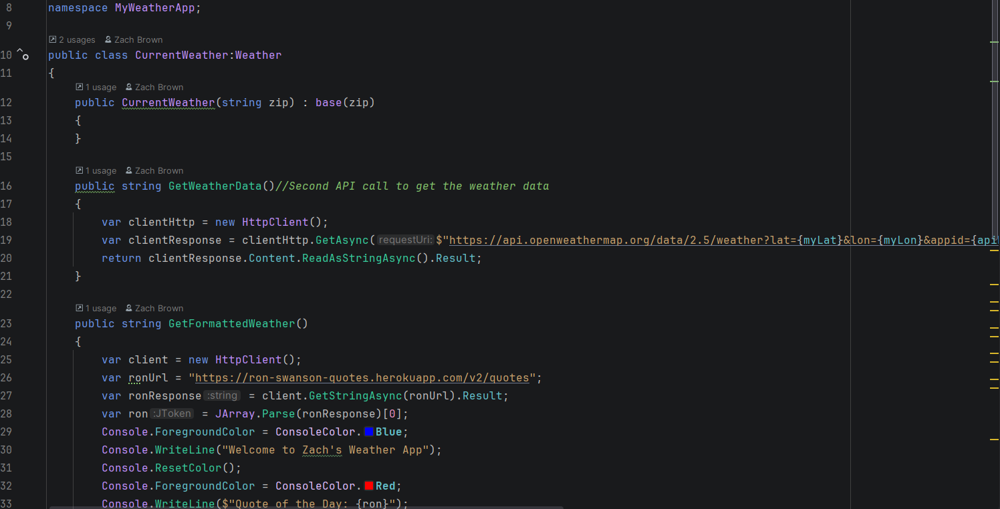

Projects

Weather Application
Developed a weather application using C# and the .NET Framework that delivers real-time weather conditions and forecast data through API integration with the OpenWeather API. The project demonstrates experience with API consumption, application structure, data handling, and user-focused design principles.
View on GitHub
Budget Tracker Application
A full-stack budget management application that allows users to add, store, and delete income and expense entries through a clean, easy-to-use interface. Built with a database backend for persistent data storage, a Web API layer to handle communication between the frontend and backend, and a responsive frontend to deliver a seamless user experience. This project demonstrates end-to-end application development including database design, RESTful API construction, and frontend integration.
View on GitHub
Professional Portfolio Website
Created a professional portfolio website to showcase technical skills, software development projects, and ongoing growth as a developer. Built using HTML and CSS with a focus on responsive design, clean user interfaces, and a professional presentation suitable for potential employers and collaborators.
View on GitHub
Python Projects Collection
Developed a collection of Python-based games, utilities, and small applications consolidated into a single program file. This project demonstrates versatility in Python development, problem-solving skills, and the ability to create both functional tools and interactive applications while continuing to strengthen overall programming fundamentals.
View on GitHub